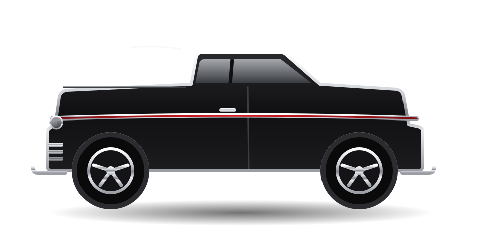
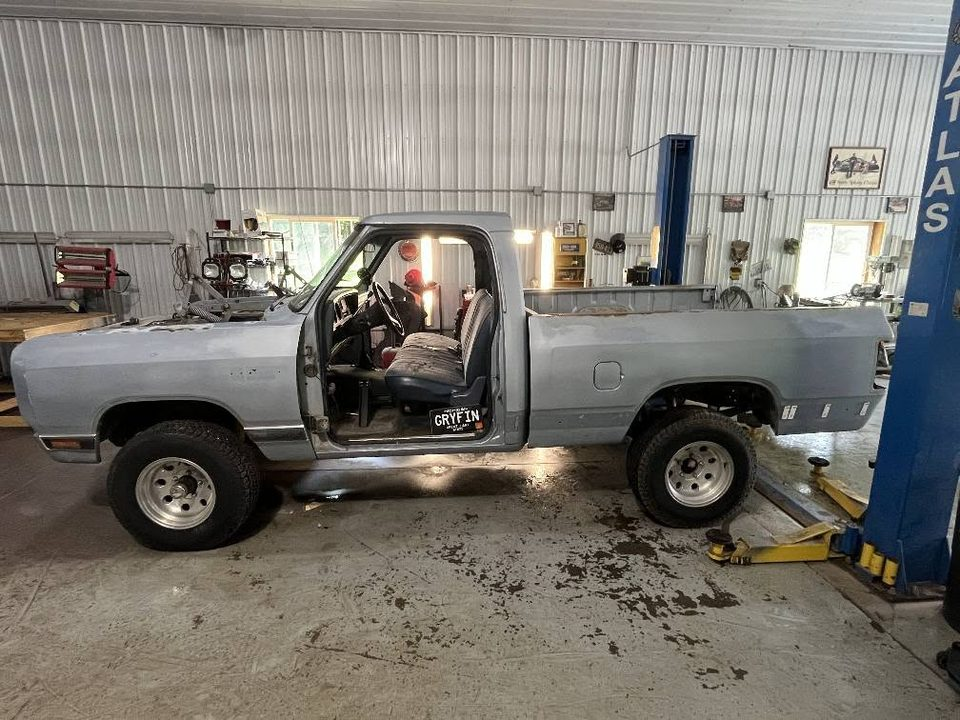
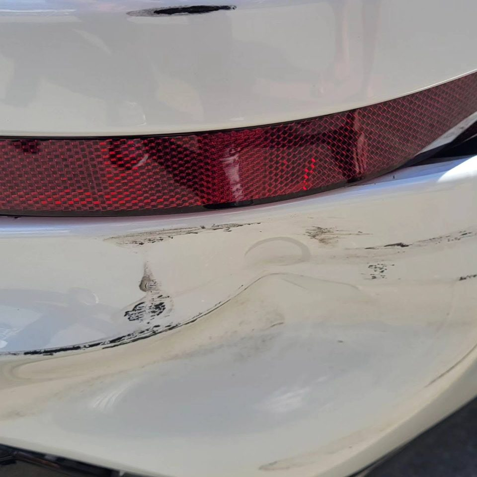
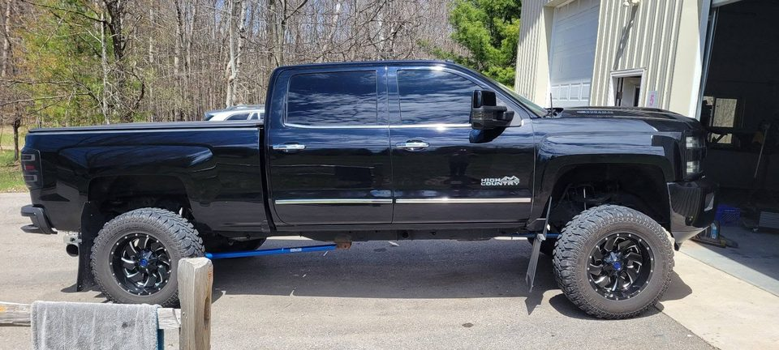

Our Work
The Builds
Every restoration that rolls through our doors gets a name, a story, and a photo-documented journey from the day it arrives to the day it drives home.

On The Lifts Right Now
In Progress
The bays are never empty. Follow along as the next generation of builds takes shape.

The Transformation
Before & After


Drag the red handle left and right to sweep between barn-find and showroom. Every build gets this treatment — documented from first tear-down photo to final buff.
Everyday Excellence
Daily Drivers Deserve Galleries Too
The named builds get the spotlight, but most of what we do is collision repair and detailing for Northern Michigan daily drivers — done to the same standard.




Deer strikes, parking-lot dents, winter salt, and tired paint — if it's your everyday vehicle, it still gets the Appearance Unlimited standard.